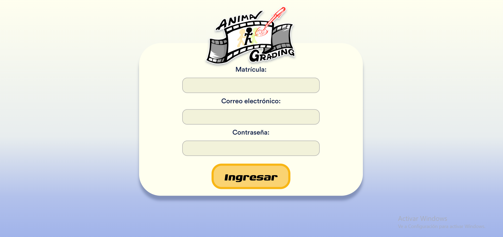

Manual de usuario
''

¡Hola!
¿Te perdiste y no sabes qué hacer?
Selecciona la página en la que te encuentras para obtener más informacion sobre qué es lo que puedes hacer.
Iniciar sesión
Para ingresar al sistema como docente, sigue estos sencillos pasos:
- Matrícula: Ingresa tu número de matrícula o identificador docente asignado.
- Correo electrónico: Escribe tu dirección de correo institucional registrado.
- Contraseña: Introduce la clave de acceso de tu cuenta.
- Ingresar: Haz clic en el botón amarillo "ingresar" para acceder a tu panel de control y asignaciones.
